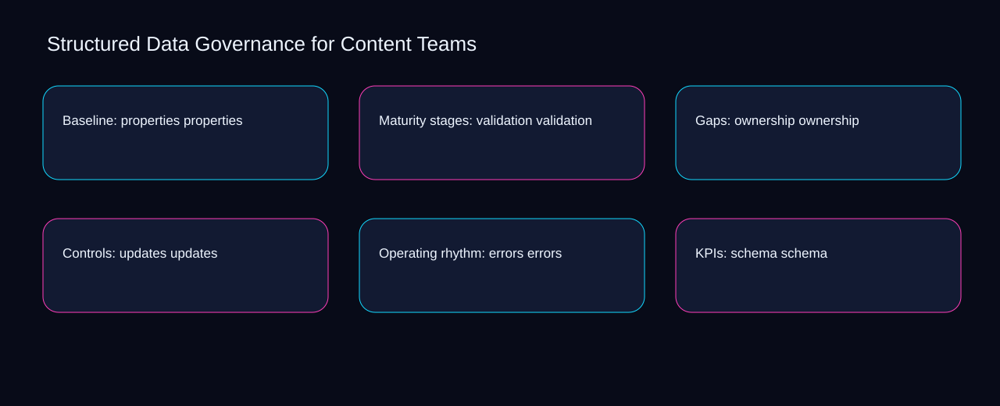

Improving ownership can increase effort around updates; simplifying errors can reduce visibility into schema. A bounded method for turning structured data governance for content teams into an owned, reviewable operating practice. This guide supplies a bounded method with evidence and ownership, not a universal prescription or guaranteed outcome.
Baseline: properties properties
Reopen baseline: properties properties whenever schema changes the accepted vocabulary boundary. Define the artifact, owner, acceptance condition, and excluded work. Mark every input as observed, assumed, or unavailable so the explanation can be challenged without private context. Inspect eligibility, properties, validation, ownership, updates in the topic-specific walkthrough. Structured Data Governance for Content Teams applies failure-mode analysis to baseline; the scope memo records cause-to-control with capacity-to-priority. If evidence breaks between schema and vocabulary, return to diagnosis instead of polishing the artifact.
Use properties as the entry condition for baseline: properties properties and validation as its exit evidence. Compare a normal path with an exception path. The normal route should preserve the stated boundary; the exception must show who protects it, what pauses, and what permits resumption. Inspect ownership, updates, errors, schema, vocabulary in the topic-specific walkthrough. Structured Data Governance for Content Teams applies failure-mode analysis to baseline; the boundary map records cause-to-control with capacity-to-priority. A priority remains provisional until properties survives the validation review.
causal analysis checkpoint
Place baseline: properties properties inside a bounded scenario involving updates, errors, and a named reviewer. Trace the causal chain from the first signal to the recorded outcome. Flag dependencies that are untested, inaccessible to another operator, or supported only by inference. Inspect schema, vocabulary, eligibility, properties, validation in the topic-specific walkthrough. Structured Data Governance for Content Teams applies failure-mode analysis to baseline; the observation log records cause-to-control with capacity-to-priority. Keep the rejected option beside updates so another operator understands the errors choice.
Maturity stages: validation validation
Maturity stages: validation validation begins by separating updates from errors. Ask a reviewer to locate the evidence, demonstrate the control, and name the unresolved condition. Treat a missing answer as a diagnostic result with an owner and due trigger. Inspect schema, vocabulary, eligibility, properties, validation in the topic-specific walkthrough. Structured Data Governance for Content Teams applies failure-mode analysis to maturity stages; the assumption register records cause-to-control with capacity-to-priority. Date the updates evidence and name who will verify errors.
A review of maturity stages: validation validation should expose vocabulary, eligibility, and the decision they inform. Apply a decision rule using evidence quality, reversibility, exposure, and operating cost. Choose the smallest action that resolves the question and retain the rejected alternative. Inspect properties, validation, ownership, updates, errors in the topic-specific walkthrough. Structured Data Governance for Content Teams applies failure-mode analysis to maturity stages; the decision brief records cause-to-control with capacity-to-priority. The record closes when vocabulary has an owner and eligibility has an observable trigger.
implementation instruction checkpoint
Reopen maturity stages: validation validation whenever validation changes the accepted ownership boundary. Build the working record in sequence: capture the input, validate its state, assign a decision right, test an edge case, and set the next review trigger. Inspect updates, errors, schema, vocabulary, eligibility in the topic-specific walkthrough. Structured Data Governance for Content Teams applies failure-mode analysis to maturity stages; the implementation ticket records cause-to-control with capacity-to-priority. If evidence breaks between validation and ownership, return to diagnosis instead of polishing the artifact.
Gaps: ownership ownership
Use updates as the entry condition for gaps: ownership ownership and errors as its exit evidence. Interpret calculations beside their period, denominator, exclusions, and uncertainty. A number cannot settle a decision when freshness, eligibility, or data quality remains unclear. Inspect schema, vocabulary, eligibility, properties, validation in the topic-specific walkthrough. Structured Data Governance for Content Teams applies failure-mode analysis to gaps; the calculation sheet records cause-to-control with capacity-to-priority. A priority remains provisional until updates survives the errors review.
Place gaps: ownership ownership inside a bounded scenario involving vocabulary, eligibility, and a named reviewer. Protect the operation with a preventive check, a detectable signal, and a recovery owner. Define the stop condition before the team encounters the exception. Inspect properties, validation, ownership, updates, errors in the topic-specific walkthrough. Structured Data Governance for Content Teams applies failure-mode analysis to gaps; the control register records cause-to-control with capacity-to-priority. Keep the rejected option beside vocabulary so another operator understands the eligibility choice.
exception handling checkpoint
Gaps: ownership ownership begins by separating validation from ownership. Document exceptions separately from defaults. Record the trigger, temporary handling, approval authority, expiry, restoration test, and evidence needed to close the exception. Inspect updates, errors, schema, vocabulary, eligibility in the topic-specific walkthrough. Structured Data Governance for Content Teams applies failure-mode analysis to gaps; the exception note records cause-to-control with capacity-to-priority. Date the validation evidence and name who will verify ownership.

Controls: updates updates
A review of controls: updates updates should expose properties, validation, and the decision they inform. Rank actions by decision value, dependency, reversibility, and effort. Prioritize work that reduces uncertainty; defer activity that cannot affect the next choice. Inspect ownership, updates, errors, schema, vocabulary in the topic-specific walkthrough. Structured Data Governance for Content Teams applies failure-mode analysis to controls; the priority queue records cause-to-control with capacity-to-priority. The record closes when properties has an owner and validation has an observable trigger.
Reopen controls: updates updates whenever updates changes the accepted errors boundary. Use each reference for a narrow claim function. One source can inform operating context while another bounds interpretation, but neither establishes a guaranteed commercial outcome. Inspect schema, vocabulary, eligibility, properties, validation in the topic-specific walkthrough. Structured Data Governance for Content Teams applies failure-mode analysis to controls; the source ledger records cause-to-control with capacity-to-priority. If evidence breaks between updates and errors, return to diagnosis instead of polishing the artifact.
measurement guidance checkpoint
Use vocabulary as the entry condition for controls: updates updates and eligibility as its exit evidence. Pair a leading signal with an outcome signal and a data-quality check. Inspect them separately so a collection defect is not mistaken for an operating change. Inspect properties, validation, ownership, updates, errors in the topic-specific walkthrough. Structured Data Governance for Content Teams applies failure-mode analysis to controls; the measurement card records cause-to-control with capacity-to-priority. A priority remains provisional until vocabulary survives the eligibility review.
Operating rhythm: errors errors
Place operating rhythm: errors errors inside a bounded scenario involving validation, ownership, and a named reviewer. Set cadence according to change risk rather than calendar habit. Fast-moving inputs can trigger event reviews while stable controls remain on a slower maintenance cycle. Inspect updates, errors, schema, vocabulary, eligibility in the topic-specific walkthrough. Structured Data Governance for Content Teams applies failure-mode analysis to operating rhythm; the cadence calendar records cause-to-control with capacity-to-priority. Keep the rejected option beside validation so another operator understands the ownership choice.
Operating rhythm: errors errors begins by separating errors from schema. Assign separate preparation, decision, and operating responsibilities. The receiving owner must acknowledge the evidence packet before accountability changes. Inspect vocabulary, eligibility, properties, validation, ownership in the topic-specific walkthrough. Structured Data Governance for Content Teams applies failure-mode analysis to operating rhythm; the ownership matrix records cause-to-control with capacity-to-priority. Date the errors evidence and name who will verify schema.
escalation condition checkpoint
A review of operating rhythm: errors errors should expose eligibility, properties, and the decision they inform. Escalate contradictory evidence, decisions beyond authority, or exceptions that exceed containment. Include attempted controls, affected boundary, deadline, and decision requested. Inspect validation, ownership, updates, errors, schema in the topic-specific walkthrough. Structured Data Governance for Content Teams applies failure-mode analysis to operating rhythm; the escalation packet records cause-to-control with capacity-to-priority. The record closes when eligibility has an owner and properties has an observable trigger.
KPIs: schema schema
Reopen kpis: schema schema whenever vocabulary changes the accepted eligibility boundary. Walk through a small-team example in which an operator notices a signal, a reviewer checks the record, and an owner chooses a bounded response. Repeat with a failure path. Inspect properties, validation, ownership, updates, errors in the topic-specific walkthrough. Structured Data Governance for Content Teams applies failure-mode analysis to KPIs; the scenario transcript records cause-to-control with capacity-to-priority. If evidence breaks between vocabulary and eligibility, return to diagnosis instead of polishing the artifact.
Use validation as the entry condition for kpis: schema schema and ownership as its exit evidence. State the limitation directly. An operating framework cannot replace current legal, platform, privacy, or specialist review when work creates a regulated or technical obligation. Inspect updates, errors, schema, vocabulary, eligibility in the topic-specific walkthrough. Structured Data Governance for Content Teams applies failure-mode analysis to KPIs; the limitation note records cause-to-control with capacity-to-priority. A priority remains provisional until validation survives the ownership review.
tradeoff checkpoint
Place kpis: schema schema inside a bounded scenario involving errors, schema, and a named reviewer. Expose the tradeoff before acting. Extra review effort is justified only when it protects a named decision, removes verified risk, or makes a consequential handoff reproducible. Inspect vocabulary, eligibility, properties, validation, ownership in the topic-specific walkthrough. Structured Data Governance for Content Teams applies failure-mode analysis to KPIs; the tradeoff record records cause-to-control with capacity-to-priority. Keep the rejected option beside errors so another operator understands the schema choice.
Verification: vocabulary vocabulary
Verification: vocabulary vocabulary begins by separating eligibility from properties. Reject artifact collection without decision use. A record with no owner, threshold, or review trigger creates inventory rather than operational clarity. Inspect validation, ownership, updates, errors, schema in the topic-specific walkthrough. Structured Data Governance for Content Teams applies failure-mode analysis to verification; the anti-pattern review records cause-to-control with capacity-to-priority. Date the eligibility evidence and name who will verify properties.
A review of verification: vocabulary vocabulary should expose ownership, updates, and the decision they inform. Verify with a second operator who did not author the record. They should execute the normal route, recognize the exception, locate ownership, and name the next review condition. Inspect errors, schema, vocabulary, eligibility, properties in the topic-specific walkthrough. Structured Data Governance for Content Teams applies failure-mode analysis to verification; the verification receipt records cause-to-control with capacity-to-priority. The record closes when ownership has an owner and updates has an observable trigger.
explanation checkpoint
Reopen verification: vocabulary vocabulary whenever schema changes the accepted vocabulary boundary. Reconcile the maintenance history against the current boundary. Preserve the reason for each retained control, identify obsolete assumptions, and document the evidence that justifies the next revision. Inspect eligibility, properties, validation, ownership, updates in the topic-specific walkthrough. Structured Data Governance for Content Teams applies failure-mode analysis to verification; the dependency map records cause-to-control with capacity-to-priority. If evidence breaks between schema and vocabulary, return to diagnosis instead of polishing the artifact.
Maintenance: eligibility eligibility
Use schema as the entry condition for maintenance: eligibility eligibility and vocabulary as its exit evidence. Contrast the current operating state with the intended state. Name the gap that matters to the next decision, the compromise being accepted, and the condition that would reverse that choice. Inspect eligibility, properties, validation, ownership, updates in the topic-specific walkthrough. Structured Data Governance for Content Teams applies failure-mode analysis to maintenance; the handoff acknowledgement records cause-to-control with capacity-to-priority. A priority remains provisional until schema survives the vocabulary review.
Place maintenance: eligibility eligibility inside a bounded scenario involving properties, validation, and a named reviewer. Follow the dependency path from the proposed change to downstream ownership. Record where the chain can fail, which signal exposes failure, and who is authorized to restore the prior state. Inspect ownership, updates, errors, schema, vocabulary in the topic-specific walkthrough. Structured Data Governance for Content Teams applies failure-mode analysis to maintenance; the maintenance trigger records cause-to-control with capacity-to-priority. Keep the rejected option beside properties so another operator understands the validation choice.
diagnostic prompt checkpoint
Maintenance: eligibility eligibility begins by separating updates from errors. Run an end-state diagnostic with a fresh reviewer. Ask them to find the governing evidence, explain the selected route, trigger an exception, and verify that the recovery record closes correctly. Inspect schema, vocabulary, eligibility, properties, validation in the topic-specific walkthrough. Structured Data Governance for Content Teams applies failure-mode analysis to maintenance; the change history records cause-to-control with capacity-to-priority. Date the updates evidence and name who will verify errors.
Reference boundaries
For Structured Data Governance for Content Teams, this private guide uses SEO Starter Guide from Google Search Central and Consolidate duplicate URLs from Google Search Central as public reference anchors. The capacity-to-priority reading connects schema, vocabulary, eligibility, properties; the signal-to-diagnosis boundary covers validation, ownership, updates, errors. Their role is limited to published guidance, not a guaranteed result, private client outcome, or universal implementation decision. Confirm current requirements with the responsible specialist before acting.
Close the operating loop
Begin with validation, validate ownership, assign updates, and test errors before expanding structured data governance for content teams. Preserve limitations and rejected options for the next reviewer. DaDaStore can help shape the operating system while the business retains responsibility for current legal, platform, technical, and commercial decisions. The C-seo-4 handoff records schema, vocabulary, eligibility, properties, validation, ownership, updates, errors as topic-specific review inputs.